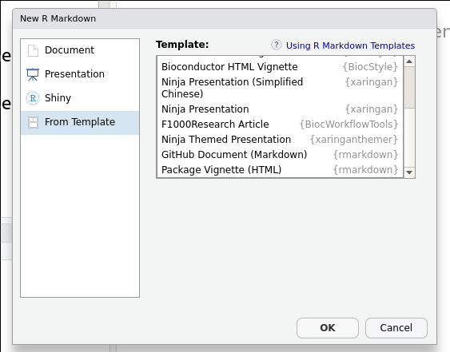

We have already seen how to implement reproducible report using the Rmarkdown package in the WSBIM1207 cours.
Here, we are going to see a few additional capabilities
When compiling Rmd documents with many code chunks, it becomes difficult to quickly locate bugs in case of errors:
label: unnamed-chunk-67
|........................................................... | 85%
inline R code fragments
|............................................................ | 85%
label: unnamed-chunk-68
|............................................................ | 86%
ordinary text without R code
label: unnamed-chunk-69
|............................................................. | 87%
ordinary text without R code
label: unnamed-chunk-70
|.............................................................. | 88%
ordinary text without R code
|.............................................................. | 89%
label: unnamed-chunk-71
inline R code fragmentsIt is recommended to uniquely name each code chunk. These labels are then reported in the knitting progress output, and it becomes trivial to identify the code chunk that produces the error.
label: si
|.................................................................... | 98%
ordinary text without R code
|..................................................................... | 98%
label: pkgs (with options)
List of 4
$ eval : logi TRUE
$ echo : logi FALSE
$ results: chr "markup"
$ comment: chr ""
|..................................................................... | 99%
ordinary text without R code
|......................................................................| 99%
label: setup (with options)
List of 1
$ eval: logi FALSE
|......................................................................| 100%
ordinary text without R codeThere will be cases when the Knit button in RStudio will not be
available. A typical example is when you use R on a server through the
terminal. In such cases, you can directly use the
rmarkdown::render() function:
It is also possibly to define the output format, which will override the output format defined in the header:
library("rmarkdown")
render("report.Rmd", output_format = pdf_document())
render("report.Rmd", output_format = html_document())Note that the pdf_document() and html_document() functions are
also defined in the rmarkdown package. Make sure to either load the
package or prefix it all functions.
Caching refers to the general technique of storing a result once its computed so that next time, one the result is needed, it can be read back instead of repeating the computation. This is useful when the computation take much more time that reading the results from disk.
In Rmarkdown, this can be done by setting the cache option to TRUE
in the code chunk header:
```{r long_computation, cache=TRUE}
res <- long_computation()
```This can be easily be tested by simulating a long computation with the Sys.sleep(time)
function, where time is the time interval to suspend execution for, in seconds.
► Question
Create a new Rmd document with a single code chunk calling
Sys.sleep(5). Compile it twice and compare the compilation times.
The system.time() function can be used to measure the time to run
a fonction in R. Instead of manually comparing the compilation
timings, wrap a call to render() in system.time() to let R
record the compilation timings. Hint: you can set render(quiet = TRUE) to remove the knitting messages.
Once you code chunk is cached, it will never be executed unless the content of the code chunk is modified. In such a case, the code will be executed again and the new results will be stored.
► Question
Modifiy the content of the cached code chunk and re-render the Rmd file to confirm that the chunk is executed.
So far, we have used Rmarkdown to produce documents, in pdf or in html. Rmarkdown can be used to produce various types of documents using different templates. In particular, when generating slides for a presentation about data analysis, it might be convenient to use and Rmd template to make sure that all figures and results presented are genuine, and can readily be reproduced.
Producing other types of document is only a matter of installing the appropriate template and defining the type of document in the Rmd header. In RStudio, this is simply a matter of choosing a template from the list of pre-installed ones when creation a new Rmd document:
Figure 1.1: Choosing and Rmd template.
For the slides, choose the
xaringan
template called Ninja Presentation.
► Question
Create a new xaringan slide deck, compile it and go through the
slides to learn about its capabilities. You can also consult the
xaringan
chapter in the R
Markdown: The Definitive Guide book.
One important aspect of writing scientific documents is to cite one’s sources. The packages and papers that one reads and cites as part of a scientific report, paper or thesis quickly becomes too large to manage manually. It is therefore recommeded to use store references in a unique file, ideally managed by a dedicated software.
In markdown, that file type is often a BibTex file (extension .bib)
that contain a set of entries such as these ones for R itself, the
dplyr package, or the DESeq paper (see chapter 4).
@Manual{R-base,
title = {R: A Language and Environment for Statistical
Computing},
author = {{R Core Team}},
organization = {R Foundation for Statistical Computing},
address = {Vienna, Austria},
year = {2019},
url = {https://www.R-project.org},
}
@Manual{dplyr,
title = {dplyr: A Grammar of Data Manipulation},
author = {Hadley Wickham and Romain François and Lionel {
Henry} and Kirill Müller},
year = {2020},
note = {R package version 1.0.2},
url = {https://CRAN.R-project.org/package=dplyr},
}
@Article{Love:2014,
title = {Moderated estimation of fold change and dispersion for RNA-seq data with DESeq2},
author = {Michael I. Love and Wolfgang Huber and Simon Anders},
year = {2014},
journal = {Genome Biology},
doi = {10.1186/s13059-014-0550-8},
volume = {15},
issue = {12},
pages = {550},
}If the above entries are stored in the file refs.bib, then you’ll
need to define that file in the Rmd header as
---
bibliography: references.bib
---and then cite each reference using the unique keys with @R-base or
[@R-base] to put the citation between parenthesis. To cite multiple
entries, separate these by semicolons,
e.g. [@R-base;@dplyr;@Love:2014].
When compiled, the bibliography will be inserted at the end of the document under the section References.
► Question
Create a simple markdown file and a BibTex file using the references above and cite them.
A useful function to get the BibTex entries of R packages or their
associated scientific papers is to use the citation() function:
## To cite R in publications use:
##
## R Core Team (2024). _R: A Language and Environment for Statistical
## Computing_. R Foundation for Statistical Computing, Vienna, Austria.
## <https://www.R-project.org/>.
##
## A BibTeX entry for LaTeX users is
##
## @Manual{,
## title = {R: A Language and Environment for Statistical Computing},
## author = {{R Core Team}},
## organization = {R Foundation for Statistical Computing},
## address = {Vienna, Austria},
## year = {2024},
## url = {https://www.R-project.org/},
## }
##
## We have invested a lot of time and effort in creating R, please cite it
## when using it for data analysis. See also 'citation("pkgname")' for
## citing R packages.## To cite package 'SummarizedExperiment' in publications use:
##
## Morgan M, Obenchain V, Hester J, Pagès H (2024).
## _SummarizedExperiment: SummarizedExperiment container_.
## doi:10.18129/B9.bioc.SummarizedExperiment
## <https://doi.org/10.18129/B9.bioc.SummarizedExperiment>, R package
## version 1.34.0,
## <https://bioconductor.org/packages/SummarizedExperiment>.
##
## A BibTeX entry for LaTeX users is
##
## @Manual{,
## title = {SummarizedExperiment: SummarizedExperiment container},
## author = {Martin Morgan and Valerie Obenchain and Jim Hester and Hervé Pagès},
## year = {2024},
## note = {R package version 1.34.0},
## url = {https://bioconductor.org/packages/SummarizedExperiment},
## doi = {10.18129/B9.bioc.SummarizedExperiment},
## }For more details about bibliographies and citations, see
R Markdown: The Definitive Guide, Yihui Xie, J. J. Allaire, Garrett Grolemund.
R Markdown Cookbook, Yihui Xie, Christophe Dervieux, Emily Riederer.
Page built: 2024-11-01 using R version 4.4.1 (2024-06-14)